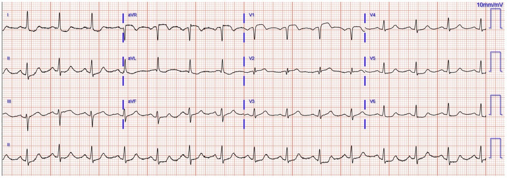
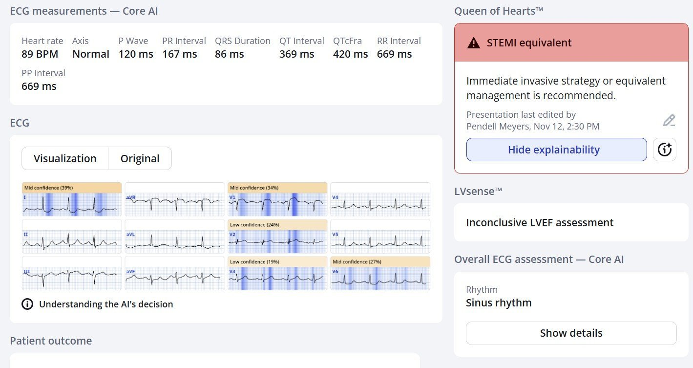
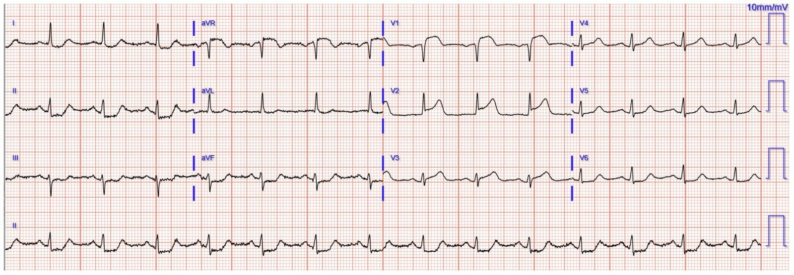
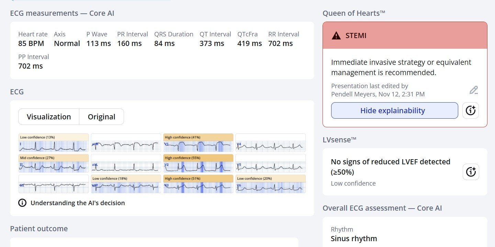
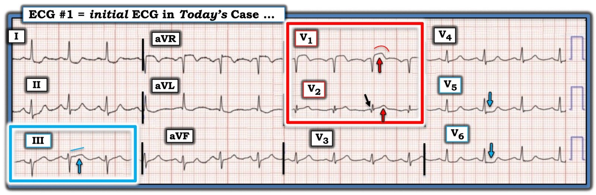

14/11/2025 — Một phụ nữ ngoài 50 tuổi đau ngực. Không có ST chênh lên đủ tiêu chuẩn chẩn đoán (chẩn đoán vô giá trị ấy: “NSTEMI”). Đó là gì và chuyện gì đã xảy ra?
Bản dịch tiếng Việt của bài "A woman in her 50s with chest pain. No diagnostic STE (that worthless diagnosis: “NSTEMI”). What is it and what happened?" – Dr. Smith’s ECG Blog. Giữ nguyên toàn bộ 5 hình ảnh và 1 video của bản gốc.
Gửi bởi một người ẩn danh, Pendell Meyers viết
Một phụ nữ ngoài 50 tuổi đến khám vì đau ngực cấp và khó thở.
Bệnh nhân trông khỏe, dấu hiệu sinh tồn bình thường.
Đây là điện tâm đồ lúc phân loại (triage) của bệnh nhân:


Bạn nghĩ gì?
Điện tâm đồ cho thấy nhịp xoang, phức bộ QRS bình thường và có dấu hiệu tắc cấp động mạch LAD. Điện tâm đồ này cho thấy dấu hiệu xoáy trước tim (Precordial Swirl) mà chúng tôi đã đặt tên và công bố tại đây. Dấu hiệu này gồm ST chênh lên (STE) và/hoặc sóng T tối cấp (HATW) ở V1-V2, kèm ST chênh xuống (STD) soi gương và/hoặc sóng T đảo ngược (TWI) ở V5-V6. Vào thời điểm gửi bản thảo này, chúng tôi chưa có khả năng định lượng HATW một cách tự động. Thay thế tốt nhất hiện có là chúng tôi mô tả tỷ lệ sóng T trên sóng S từ 0.40 trở lên, và trong ca này tỷ lệ đó ở V2 vượt rất rõ.
Smith: Xoáy trước tim là tình trạng tắc động mạch LAD ở đoạn gần trước nhánh xuyên vách thứ nhất, khiến không chỉ phần lớn vùng cấp máu của LAD bị đe dọa mà vách liên thất cũng bị thiếu máu cục bộ, với ST chênh lên tương ứng hướng từ trái sang phải trong vách, tạo ra STE ở V1 — chuyển đạo nằm trên cả vách lẫn thất phải (nhồi máu thất phải (RV MI) cũng có thể giống xoáy trước tim). Tất cả đã được giải thích, kèm sơ đồ, trong bài viết năm 2013 này, trước khi chúng tôi đặt ra thuật ngữ “xoáy trước tim”. Septal STEMI with ST elevation in V1 and V4R, and reciprocal ST depression in V5, V6 (STEMI vách với ST chênh lên ở V1 và V4R, và ST chênh xuống soi gương ở V5, V6)
Smith: Còn có bằng chứng OMI thành dưới ở chuyển đạo III, với STE và HATW, nhưng lại có STD ở I, II, aVF, V4-6. Điều này gợi ý có thêm hình ảnh Aslanger: cả hai cùng lúc chăng? Đây chỉ là chuyện học thuật, vì OMI đã rõ ràng và cần kích hoạt phòng thông tim.
Một số ca có hình ảnh Aslanger xem tại đây và tại đây.
Ca bệnh tiếp diễn: Đáng tiếc, bác sĩ điều trị đọc điện tâm đồ là “ST chênh xuống tối thiểu ở các chuyển đạo bên”, nên quy trình đánh giá đau ngực thường quy được tiến hành.
Đây là những gì bác sĩ lẽ ra đã thấy lúc phân loại nếu dùng Queen of Hearts:


PMcardio for Individuals nay đã có mô hình Queen of Hearts mới nhất, khả năng giải thích của AI (bản đồ nhiệt màu xanh) và %phân suất tống máu thất trái. Tải ngay cho iOS hoặc Android: https://individuals.pmcardio.com/app/promo?code=DRSMITH20. Là thành viên cộng đồng của chúng tôi, bạn có thể dùng mã DRSMITH20 để được giảm giá độc quyền 20% cho năm đầu tiên của gói đăng ký theo năm. Tuyên bố miễn trừ: PMcardio đã được chứng nhận CE để lưu hành tại Liên minh châu Âu và Vương quốc Anh. Công nghệ PMcardio chưa được Cục Quản lý Thực phẩm và Dược phẩm Hoa Kỳ (FDA) cho phép sử dụng lâm sàng tại Hoa Kỳ.
Nhưng thay vào đó, bệnh nhân không được ghi lại điện tâm đồ nào cho đến khoảng 40 phút sau:




Vì lúc này đã được nhận ra là “STEMI”, phòng thông tim được kích hoạt.
Bệnh nhân bị nhiều cơn ngừng tim do rung thất ngay trong phòng thông tim.
Chụp mạch vành cho thấy tắc lỗ xuất phát (ostial) động mạch LAD (TIMI 0), được mở thông thành công và tiến hành PCI.
Đáng tiếc, sốc tim tiến triển và bệnh nhân đã không qua khỏi trong đợt nằm viện dù được điều trị tích cực.
Xem thêm các ca xoáy trước tim tại đây:
= = =
======================================
BÌNH LUẬN CỦA TÔI, bởi KEN GRAUER, MD (14/11/2025 ):
Xét từ góc độ đọc điện tâm đồ — tôi thấy “mãn nguyện” khi đọc phần diễn giải của BS. Meyers và BS. Smith về điện tâm đồ ban đầu hôm nay — vì suy nghĩ tức thì của tôi là không thể phân biệt giữa xoáy trước tim (Precordial Swirl) với hình ảnh Aslanger (Aslanger’s Pattern) (với nhồi máu thành dưới, có lẽ kèm tổn thương thất phải cấp — để giải thích ST chênh lên ở chuyển đạo V1) — đồng thời tôi cũng nghĩ (giống BS. Smith) rằng việc cả hai tình trạng này xảy ra cùng lúc có vẻ là bất thường — và đến lúc đó tôi tự nhủ: “Dù thế nào đây cũng là một OMI rõ ràng, cần thông tim ngay … “.
- Những dòng trên phản ánh suy nghĩ “học thuật” đến với tôi chỉ trong vài giây khi nhìn bản ghi thú vị này.
- Suy nghĩ cá nhân của tôi thì rất khác. Tôi nghĩ: “Thật bực bội — vì điện tâm đồ ban đầu cho thấy rõ ràng có một biến cố cấp nào đó đang diễn ra — và lẽ ra không được bỏ sót như đã xảy ra. Và bệnh nhân này đã tử vong …”. Dù không thể nói liệu bệnh nhân có thể sống sót nếu được can thiệp sớm hơn hay không — ca này vẫn mang lại những bài học khó khăn nhưng quan trọng.
= = =
Điện tâm đồ ban đầu hôm nay:
Như thường thấy — bệnh sử cung cấp manh mối thứ 1 rằng có “điều gì đó” cấp tính đang diễn ra ( = đau ngực và khó thở mới khởi phát ở một bệnh nhân có tần số tim tương đối nhanh, gần 90 lần/phút). Bệnh sử này đặt trách nhiệm lên chúng ta phải loại trừ thay vì xác định một biến cố cấp.
- Để cho rõ, trong Hình 1 — tôi đã đánh dấu điện tâm đồ ban đầu hôm nay. “Mắt” tôi bị thu hút ngay lập tức vào 2 chuyển đạo trong hình chữ nhật MÀU ĐỎ . Ở một bệnh nhân mới CP (đau ngực) — đơn giản là không thể nào ST chênh lên dạng vòm ở chuyển đạo V1 lại bình thường trên một điện tâm đồ không có LVH và không có QRS giãn rộng!
- Việc sóng QS ở chuyển đạo V1 là có ý nghĩa cho đến khi chứng minh được điều ngược lại — được củng cố bởi sóng Q tinh tế nhưng hiện diện ở chuyển đạo V2 kế bên (mũi tên ĐEN ở V2). Xét đến phức bộ QRS ở chuyển đạo V2 nhỏ bé đến thế nào — sóng T “béo” bất thường ở V2 là “đồ sộ” không tương xứng, và đi kèm ST chênh lên ở chuyển đạo V1, củng cố cho một biến cố cấp đang diễn ra.
- BS. Meyers và BS. Smith giới thiệu 20 ca xoáy trước tim (“Swirl”) (và/hoặc các hình ảnh trông giống “Swirl”) trong bài ngày 15 tháng Mười năm 2022 trên Dr. Smith’s ECG Blog. Ở cuối trang của bài ngày 15 tháng Mười năm 2022 này — tôi nêu bật những đặc điểm riêng cần tìm ở các chuyển đạo V1,V2 và V5,V6 để “xác lập” chẩn đoán xoáy trước tim. Điện tâm đồ ban đầu hôm nay khớp hoàn hảo với mô tả này ( = hình dạng ST chênh lên ở chuyển đạo V1 khác với dự kiến — thường kèm đoạn ST chênh xuống có dạng dẹt ở V5,V6).
- Mặt khác (giống BS. Smith) — điện tâm đồ ban đầu hôm nay cũng khớp hoàn hảo với hình ảnh Aslanger (Xem bài ngày 4 tháng Một năm 2021) — vì có ST thẳng đuỗn kèm ST chênh lên tinh tế ở chuyển đạo III, nhưng không có ở 2 chuyển đạo thành dưới còn lại (chuyển đạo II,aVF). Chính sự xuất hiện đồng thời của DSI (thiếu máu cục bộ dưới nội tâm mạc lan tỏa) cùng với OMI thành dưới cấp đã tạo ra hình ảnh thấy trên điện tâm đồ hôm nay — trong đó có ST dẹt và chênh xuống ở nhiều chuyển đạo (chuyển đạo I,II,aVL,aVF,V4,V5,V6) kèm ST chênh lên ở các chuyển đạo III, aVR và V1. Nếu điện tâm đồ hôm nay thực sự là hình ảnh Aslanger (với DSI + nhồi máu thành dưới đồng thời) — tôi nghĩ mức ST chênh lên thêm ở chuyển đạo V1 khi đó có thể phản ánh tổn thương thất phải kèm theo.
ĐIỀU CỐT LÕI (theo BS. Meyers và BS. Smith) — Bệnh sử đau ngực (CP) mới trong ca hôm nay cùng điện tâm đồ ban đầu này lẽ ra phải thúc đẩy thông tim ngay lập tức để xác định giải phẫu mạch vành và tiến hành PCI.
- Dù ST chênh lên ở chuyển đạo III là tinh tế — thì ST chênh lên ở chuyển đạo V1 — cùng ST dẹt và chênh xuống lan tỏa ở nhiều chuyển đạo khác (kèm ST chênh lên ở chuyển đạo aVR) là những dấu hiệu điện tâm đồ không được bỏ sót.
- Nếu có bất kỳ nghi ngờ nào về các dấu hiệu trên — lẽ ra điện tâm đồ phải được ghi lại ngay lập tức. Thay vào đó, 40 phút đã trôi qua mới ghi lại điện tâm đồ. Ca này minh họa tình trạng tắc cấp đoạn gần động mạch LAD của “Swirl” đôi khi có thể tiến triển nhanh đến mức nào — với hậu quả vô cùng đáng tiếc là bệnh nhân tử vong.
= = =
Hình 1: Tôi đã đánh dấu điện tâm đồ ban đầu trong ca hôm nay.

